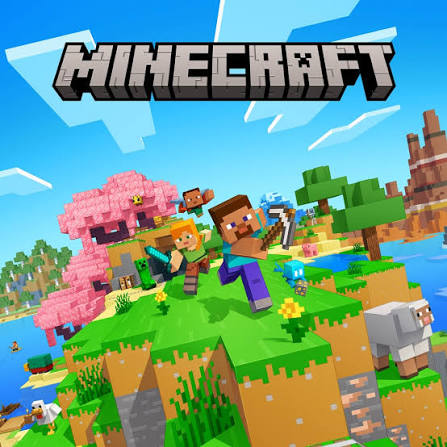
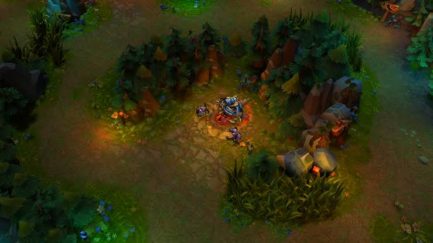
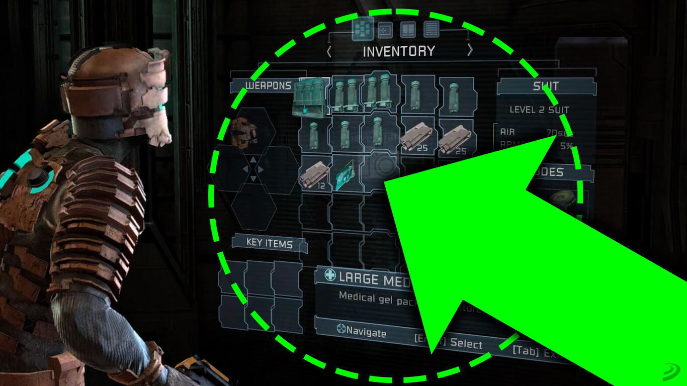
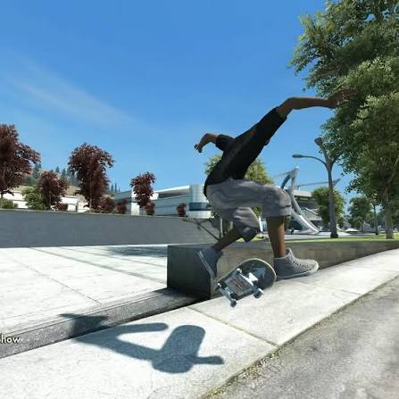
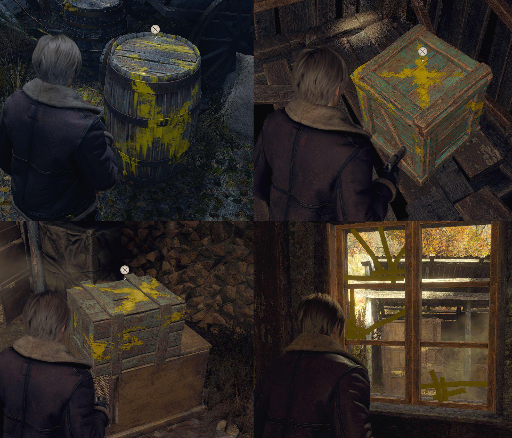
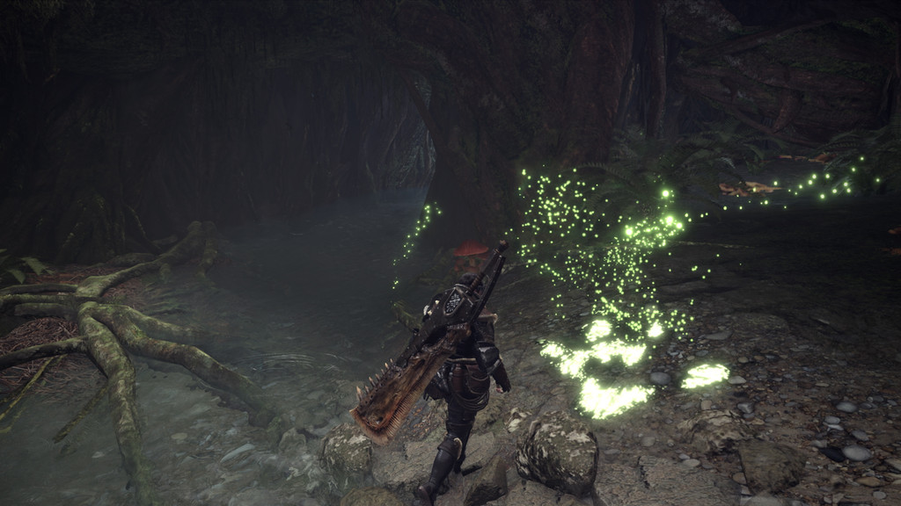
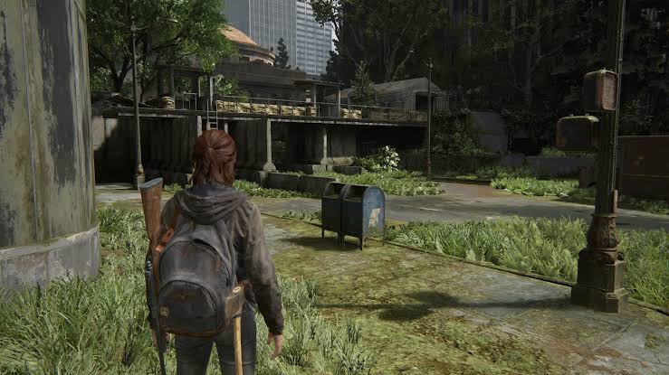
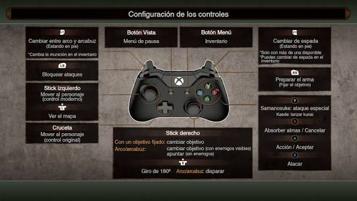
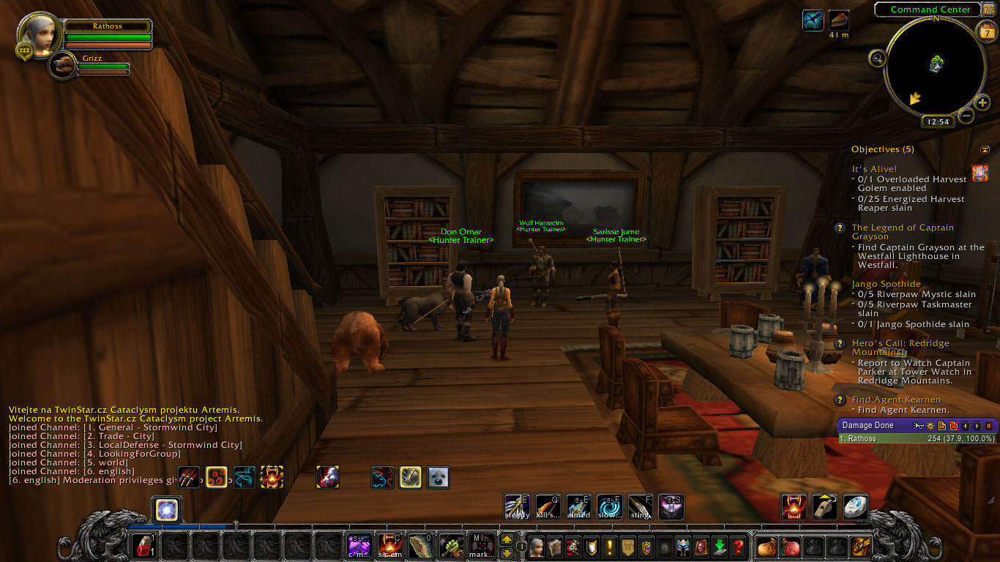

Teoria sobre usabilidad
Aqui estan los distintos apartados del temario. Pulsa en uno de los botones para ir directamente a ese contenido.
Puntos clave del temario
Durante el estudio de la usabilidad aplicada al desarrollo de interfaces, tendremos en cuenta los siguientes aspectos fundamentales:
- Análisis de la experiencia de usuario y fricciones iniciales.
- Evaluación de la claridad visual y diseño de interfaces.
- Prevención de errores y optimización de controles.
Usabilidad vs Innovación
Si el juego es lo suficientemente innovador, tal vez pueda funcionar con problemas de usabilidad significativos, ya que los jugadores están dispuestos a hacer un esfuerzo extra si experimentan algo único.
Por ejemplo, Minecraft funcionó con algunos problemas de usabilidad porque ofrecía una experiencia creativa profunda y diferente a la de otros juegos.

Usabilidad vs Coste
En los juegos gratuitos, la facilidad de uso es especialmente importante porque el compromiso inicial es bajo. Pequeñas frustraciones pueden hacer que los jugadores abandonen durante los primeros minutos.
También puede afectar a las compras dentro del juego si el usuario no entiende cómo funciona la tienda virtual.
Los juegos gratuitos de movil son un gran ejemplo. Son fáciles de aprender, enganchan y gracias a eso obtienen beneficios a partir de transacciones dentro del juego

Usabilidad vs Jugabilidad (El HUD)
Una interfaz usable debería sentirse “transparente”. El HUD muestra información importante durante la partida, como la salud o la munición, para que el jugador no tenga que recordarla o buscarla en menús.
Eliminarlo por completo puede reducir la inmersión si obliga a abrir menús constantemente. Juegos como Ghost of Tsushima y Dead Space ofrecen ejemplos de cómo integrar información de forma más natural.

Heurísticas en videojuegos
Las heurísticas son reglas prácticas para mejorar la interacción. En videojuegos se recomienda permitir controles personalizables, ofrecer respuestas inmediatas, presentar objetivos claros, evitar grandes bloques de texto y mantener una interfaz coherente.
También es importante que el jugador sienta que tiene el control y que el juego le ayude a recuperarse de errores que no forman parte del desafío.
Por supuesto esto no supone que hay que facilitar por completo la experiencia. Hay que evitar errores o castigos injustos , pero tambien hay que proponer deafios, como en Bloodborne.

Principios de percepción de Gestalt
Estos principios explican cómo organizamos visualmente los elementos. Por ejemplo, los elementos cercanos entre sí suelen percibirse como parte del mismo grupo.
La iconografía debe ser clara y los elementos importantes deben destacar del entorno. Si hay demasiadas señales del mismo color, puede resultar difícil distinguir cuál es la más importante.
Los elementos amarillos de los ultimos Resident Evil, las pistas de Uncharted...

La forma sigue a la función
La forma de un personaje, icono u objeto debe ayudar a entender su significado. Por ejemplo, un botiquín con una cruz puede indicar que recupera salud.
Cuando un objeto parece interactivo pero no lo es, puede generar frustración. La apariencia debe ayudar al jugador a comprender qué puede hacer.
Que un videojuego consiga explicar las mecanicas y dar pistas de forma y organica es uno de los mayores logros a obtener por las desarrolladoras

La importancia de la consistencia
Los signos, los comentarios, los controles, la interfaz, la navegación del menú, las reglas y las convenciones generales en un videojuego deben ser coherentes.
Si objetos parecidos funcionan de forma distinta sin una señal clara, pueden confundir al jugador. Lo mismo ocurre si los controles cambian entre situaciones similares. Puedes ver más detalles de análisis visual en este vídeo externo de YouTube sobre usabilidad.

Prevención y recuperación de errores
Los desarrolladores deben anticiparse a errores que causan frustración innecesaria. Por ejemplo, los botones de confirmar y cancelar no deberían estar demasiado juntos si eso aumenta el riesgo de pulsar el equivocado.
En acciones importantes o irreversibles conviene incluir mensajes de confirmación.
Esto ha tomado gran peso hoy en día, puesto que a la minima frustracción por parte de los jugadores, se abandonan los juegos.
Flexibilidad y accesibilidad
Permitir ajustes como reasignar controles, cambiar el tamaño de la letra o modificar los colores puede hacer el juego más cómodo y accesible para distintos jugadores.
También es útil permitir que cada persona elija un nivel de dificultad adecuado a sus preferencias.

Feedback en tiempo real
El feedback informa al jugador de cómo responde el juego a sus acciones. Puede aparecer mediante sonidos, animaciones, cambios en las estadísticas o mensajes en pantalla.
Juegos como World of Warcraft muestran el progreso del personaje al ganar experiencia y subir de nivel, lo que ayuda a que el jugador perciba sus avances.
La curva de aprendizaje y el progreso en los juegos son un gran aliciente para jugar a un juego u otro

Enlaces externos de referencia
Recursos externos recomendados para la materia: